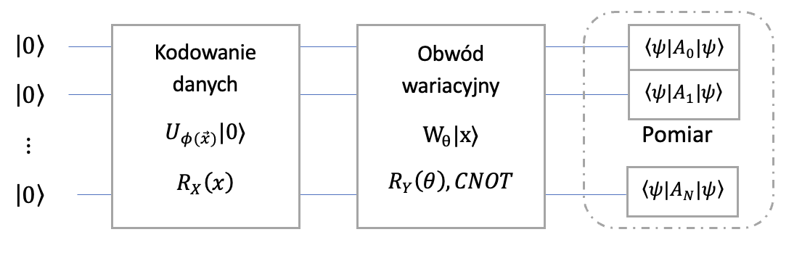

Algorytmy kwantowego uczenia maszynowego
Dziedziną łączącą klasyczne uczenie maszynowe i obliczenia kwantowe nazywamy kwantowym uczeniem maszynowym (ang. Quantum Machine Learning).
QML powstało aby szybciej i sprawniej rozwiązywać problemu uczenia maszynowego. Do tego celu chcemy wykorzystać procesory kwantowe oraz własności algorytmów kwantowych i ich przewagę nad klasycznymi odpowiednikami.
PQC – Parametrized Quantum Circuits
Parametryzowane obwody kwantowe (PQC) to podstawowy element współczesnych algorytmów hybrydowych. Ich działanie polega na tym, że stan kwantowy (czyli układ kubitów) jest modyfikowany za pomocą bramek kwantowych zależnych od zestawu parametrów klasycznych — np. kątów rotacji. Zmieniając te parametry, możemy dostosować stan wyjściowy obwodu do konkretnego zadania, np. minimalizacji energii lub klasyfikacji danych.
PQC pełnią podobną rolę jak funkcje z parametrami w klasycznym ML — np. wagi w sieciach neuronowych.
Warto zapamiętać, że nie szukamy tutaj pojedynczego wyniku pomiaru, ale statystycznej właściwości stanu kwantowego zależnej od parametrów.
RX
RX to parametryzowana jedno-kubitowa bramka realizująca obroty w osi X na sferze blocha o kąt \(\theta\).
Unitarna realizacja:
\[ RX(\theta) = \exp\left(-i \frac{\theta}{2} X\right) = \begin{bmatrix} \cos(\frac{\theta}{2}) & -i \sin(\frac{\theta}{2}) \\ -i \sin(\frac{\theta}{2}) & \cos(\frac{\theta}{2}) \end{bmatrix} \]
Dla \(\theta = \pi\), bramka ta realizuje się jako bramka X.
RZ
RZ to parametryzowana jedno-kubitowa bramka realizująca obroty w osi Z na sferze blocha o kąt \(\theta\).
Unitarna realizacja:
\[ RZ(\theta) = \exp\left(-i \frac{\theta}{2} Z\right) = \begin{bmatrix} e^{-i\theta/2} & 0 \\ 0 & e^{i\theta/2} \end{bmatrix} \]
RY
RY to parametryzowana jedno-kubitowa bramka realizująca obroty w osi Y na sferze blocha o kąt \(\theta\).
Unitarna realizacja:
\[ RY(\theta) = \exp\left(-i \frac{\theta}{2} Y\right) = \begin{bmatrix} \cos(\frac{\theta}{2}) & - \sin(\frac{\theta}{2}) \\ \sin(\frac{\theta}{2}) & \cos(\frac{\theta}{2}) \end{bmatrix} \]
🌀 Dowolny obrót kubitu
Operator obrotu dla pojedynczego kubitu można zapisać jako:
\[ R(\phi, \theta, \omega) = R_Z(\omega) R_Y(\theta) R_Z(\phi) \]
W postaci macierzowej operator ten przyjmuje formę:
\[ R(\phi, \theta, \omega) = \begin{bmatrix} e^{-i(\phi+\omega)/2}\cos(\theta/2) & -e^{-i(\phi-\omega)/2}\sin(\theta/2) \\ e^{i(\phi-\omega)/2}\sin(\theta/2) & e^{i(\phi+\omega)/2}\cos(\theta/2) \end{bmatrix} \]
📋 Szczegóły
- Liczba kubitów (wires): 1
- Liczba parametrów: 3
🧮 Przepis na gradient
Pochodna funkcji \(f\), która zależy od operatora \(R(\phi, \theta, \omega)\), względem parametru \(\phi\) jest dana wzorem:
\[ \frac{d}{d\phi} f(R(\phi, \theta, \omega)) = \frac{1}{2}\Big[f(R(\phi + \pi/2, \theta, \omega)) - f(R(\phi - \pi/2, \theta, \omega))\Big] \]
gdzie \(f\) jest wartością oczekiwaną (expectation value) zależną od operatora \(R(\phi, \theta, \omega)\).
Ten sam przepis na gradient można zastosować dla każdego z kątów: \(\phi, \theta, \omega\).
💡 Komentarz:
Operator \(R(\phi, \theta, \omega)\) opisuje dowolny obrót pojedynczego kubitu na sferze Blocha. Sekwencja trzech rotacji wokół osi Z, Y i ponownie Z pozwala uzyskać dowolny stan kwantowy z bazy obliczeniowej — dlatego ten operator jest fundamentem wielu obwodów kwantowych i bramek parametryzowanych (PQC).
Wiemy juz jak składać bramki w celu utworzenia dowolnego (i o dowolnej głębokości) obwodu. \[ \ket{\psi'} = U_m(\theta_m)\dots U_2(\theta_2) U_1(\theta_1) \ket{\psi} \]
Część indywidualnych bramek (ze zbioru \((U_i)_{i=1,\dots,m}\)) moze być ustalona np. \(X\), \(CNOT\), czyli ich parametry są ściśle określone (np. \(\pi\)).
Jednak część bramek moze zalezeć od parametrów obrotów wyrazonych najczęściej jako radiany (w zakresi \(\theta \in [-\pi, \pi]\)).
Po przygotowaniu stanu \(\ket{\psi'}\) mozemy zmierzyć jeden lub cały zestaw kubitów. Po pomiarze kubity zostają w stanie bazowym zgodnie z wykorzystanym operatorem. Najczęściej wybieramy bazę obliczeniową pozwalającą uzyskać rezultat jako listę bitów.
Tak zdefiniowany i działający obwód kwantowy mozna wykorzystać do wielu rzeczy. Dla nas najwazniejszym aspektem jest mozliwość trenowania parametrów obwodu.
Kodowanie danych
🧠Klasyczne potoki przetwarzania cech (Classical Feature Pipelines) 1. Czyszczenie danych: obsługa brakujących wartości, normalizacja skali. 2. Kodowanie: konwersja kategorii lub tekstu na wektory liczbowe. 3. Skalowanie i łączenie: skalowanie cech, tworzenie wielomianowych kombinacji lub par interakcyjnych.
⚛️ Kwantowe mapy cech (Quantum Feature Maps)
- Basis Encoding: mapowanie binarnych cech bezpośrednio na stany bazowe kubitów w bazie obliczeniowej.
- Amplitude Encoding: zakodowanie całego wektora danych w amplitudach n kubitów.
- Angle Encoding: użycie bramek rotacji \(R_X(x_i)\), \(R_Y(x_i)\), \(R_Z(x_i)\) do zakodowania każdej cechy w fazie kubitu.
⚙️ Kodowanie w bazie obliczeniowej (Basis Embedding / Encoding)
Odpowiednim sposobem kodowania danych binarnych jest tzw. â€Basis Embedding†(kodowanie w bazie obliczeniowej).
Klasa BasisEmbedding interpretuje ciąg binarny jako stan bazowy kubitów zgodnie z odwzorowaniem: \[ b = (b_0, \dots, b_{N-1}) ;\to; \ket{b_0, \dots, b_{N-1}} \]
Załóżmy, że nasze cechy (features) zapisane są jako stan \[ \ket{111} = \ket{1} \otimes \ket{1} \otimes \ket{1}. \]
Reprezentując stan jako drugi wektor bazowy (standard basis vector), a iloczyn tensorowy jako iloczyn Kroneckera, możemy łatwo potwierdzić wynik prostym obliczeniem:
\[ \ket{1} \otimes \ket{1} \otimes \ket{1} = [0, 0, 0, 0, 0, 0, 0, 1]^T \]
⚛️ Kodowanie w amplitudach (Amplitude Embedding / Encoding)
Jak sama nazwa wskazuje, tablica wartości może zostać użyta jako amplitudy stanu kwantowego, zgodnie z odwzorowaniem: \[ \alpha = (\alpha_0, \dots, \alpha_{2^N-1}) \to \sum_{k=0}^{2^N-1} \alpha_k \ket{k} \]
W ten sposób każda wartość w wektorze danych klasycznych odpowiada amplitudzie jednego ze stanów bazowych układu kwantowego. Aby stan był fizycznie poprawny, wektor amplitud musi być znormalizowany (tj. suma kwadratów modułów amplitud równa 1).
🔄 Kodowanie w kątach (Angle Embedding / Encoding)
Najprostszym sposobem kodowania danych rzeczywistych (wartości zmiennoprzecinkowych) jest tzw. â€Angle Embedding†(kodowanie w kątach).
Ten rodzaj kodowania przypisuje pojedynczej wartości rzeczywistej x stan kwantowy według odwzorowania: \[ x \to R_k(x)\ket{0} = e^{-i x \sigma_k /2} \ket{0} \] gdzie \(k \in \{x, y, z\}\) oznacza oś obrotu na sferze Blocha.
Domyślnie w klasie AngleEmbedding oś obrotu ustawiona jest na k = x. Można również wybrać k = y, ale należy unikać k = z, ponieważ obrót wokół osi Z nie zmienia amplitud stanu, a jedynie fazę globalną.
⸻
🔸 Uwaga:
Rotacje Pauliego są okresowe z okresem \(2\pi\) (z dokładnością do fazy globalnej).
Oznacza to, że dane wejściowe warto znormalizować do przedziału \([0, \pi)\), jeśli to możliwe, aby uniknąć wieloznaczności reprezentacji stanu.
🔹 Reprezentacja kwantowa danych (Quantum Embedding)
Reprezentacja kwantowa (quantum embedding) przekształca dane klasyczne w stany kwantowe w przestrzeni Hilberta za pomocą kwantowej mapy cech (feature map).
Proces ten polega na wzięciu klasycznego punktu danych \(x\) i przetłumaczeniu go na zestaw parametrów bramek w obwodzie kwantowym, tworząc stan:
\[ \ket{\psi(x)} \]
Ten etap jest kluczowy przy projektowaniu algorytmów kwantowych, ponieważ sposób zakodowania danych bezpośrednio wpływa na moc obliczeniową i zdolność do wykrywania wzorców w danych.
Schemat kodowania
Rozwazmy N wierszy 8 zmiennych \(X_1\dots X_8\) o wartościach rzeczywistych.
Potrzebujemy określić \(X_i^{max}\) oraz \(X_i^{min}\).
\(\theta^j_i = \frac{X^j_i - X_i^{min}}{X_i^{max}-X_i^{min}} \pi\)
Korzystając z bramki \(R_y\) mozemy zakodować kazdy kubit z osobnym kątem. Mozna takze wybrać dwie bramki z dwoma kątami dla jednego kubitu (\(R_y\) i \(R_z\))
Kwantowe Algorytmy Wariacyjne
Variational Quantum Algorithms należą do klasy algorytmów hybrydowych, w których część obliczeń wykonuje komputer kwantowy, a część klasyczny procesor. Ich celem jest optymalizacja zestawu parametrów, które minimalizują (lub maksymalizują) pewną funkcję kosztu. Proces polega na naprzemiennym uruchamianiu obwodu kwantowego z różnymi wartościami parametrów i wykorzystaniu klasycznego algorytmu (np. gradient descent) do poprawy tych parametrów.
👉 Schemat działania:
- Zdefiniuj obwód kwantowy zależny od parametrów (PQC).
- Zmierz jego wynik i policz wartość funkcji kosztu.
- Klasyczny optymalizator aktualizuje parametry.
- Powtarzaj, aż osiągniesz minimum.
Ten model jest fundamentem takich algorytmów jak VQE czy QAOA.
VQE to jeden z najważniejszych przykładów algorytmu wariacyjnego. Służy do znajdowania najniższej energii (wartości własnej) dla danego operatora Hamiltona — kluczowego w chemii kwantowej i fizyce cząstek.
👉 VQE łączy dwa światy: - Część kwantowa: przygotowuje stan kwantowy za pomocą obwodu parametryzowanego. - Część klasyczna: minimalizuje średnią wartość energii poprzez optymalizację parametrów.
W praktyce pozwala to badać układy molekularne czy materiały bez potrzeby użycia pełnego, kosztownego symulatora kwantowego.
Quantum Support Vector Classification (qSVM)
Klasyczny algorytm SVM (Support Vector Machine) znajduje hiperpłaszczyznę najlepiej rozdzielającą dane dwóch klas. W wersji kwantowej dane są najpierw kodowane w stanach kwantowych (np. przez amplitude encoding), a następnie mierzona jest odległość lub podobieństwo między nimi w przestrzeni Hilberta.
👉 W kwantowym SVM:
- dane wejściowe → przekształcane są w stany kwantowe,
- jądro (kernel) → jest obliczane poprzez pomiary kwantowe,
- klasyfikacja → odbywa się klasycznie, ale korzysta z â€kwantowej przestrzeni cechâ€.
Kwantowe jądra mogą umożliwiać separację danych nieliniowo rozdzielnych znacznie efektywniej niż klasyczne jądra.
Quantum Neural Networks (QNN)
Kwantowe sieci neuronowe to próba przeniesienia idei klasycznych sieci (warstw, wag i funkcji aktywacji) na grunt obwodów kwantowych. Zamiast klasycznych neuronów, wykorzystuje się bramki kwantowe sterowane parametrami, które pełnią funkcję transformacji danych. Proces trenowania QNN przypomina uczenie klasyczne — minimalizujemy funkcję błędu poprzez modyfikację parametrów obwodu.

👉 Główne cechy QNN:
- Wagi sieci odpowiadają parametrom rotacji w bramkach kwantowych.
- Funkcja aktywacji realizowana jest przez pomiar i ponowne przygotowanie stanu.
- Dzięki superpozycji, jedna warstwa może reprezentować bardzo złożone zależności danych.
W praktyce QNN są obecnie w fazie badań, ale mogą stanowić podstawę przyszłych modeli kwantowych o zdolności uczenia porównywalnej z sieciami klasycznymi.
Ansatz i schematy modelowe
Parametryzowany kwantowy obwód wariacyjny reprezentowany przez operator \(W_\theta\) zależny od wektora parametrów \(\theta\), który działa na wektor stanu przygotowany przez obwód kodujący dane \(W_\theta \ket{\phi}\), gdzie \(\ket{\phi}\) przygotowaliśmy za pomocą kodowania danych. Ze względu na bardzo dużą ilość kombinacji bramek, które można łączyć równolegle i szeregowo trudno jest wskazać jeden konkretny obwód pozwalający realizować wszystkie problemy analityczne (nie ma darmowych obiadów). Wybór odbywa się najczęściej poprzez ustalenie różnych schematów i ich trenowania. Porównać można to do klasycznych sieci neuronowych, gdzie ilość warstw ukrytych, liczba neuronów w każdej warstwie czy funkcje aktywacji są tzw. hiper-parametrami, które ustala się przez doświadczenie. Wybrany schemat obwodów kwantowych określa się często mianem ansatzu.
Pomiar i interpretacja wyników
Na tym etapie najczęściej estymuje się zbiór wartości oczekiwanych przyjmujący wartości od -1 do 1.
W zależności od realizowanego procesu można wykonać pomiar jednego lub większej ilości kubitów. Można również generować wynik w postaci amplitud, prawdopodobieństw czy też wyniku w postaci binarnej. Etap ten często nazywany jest postprocesingiem danych.

Inny sposób pomiaru
